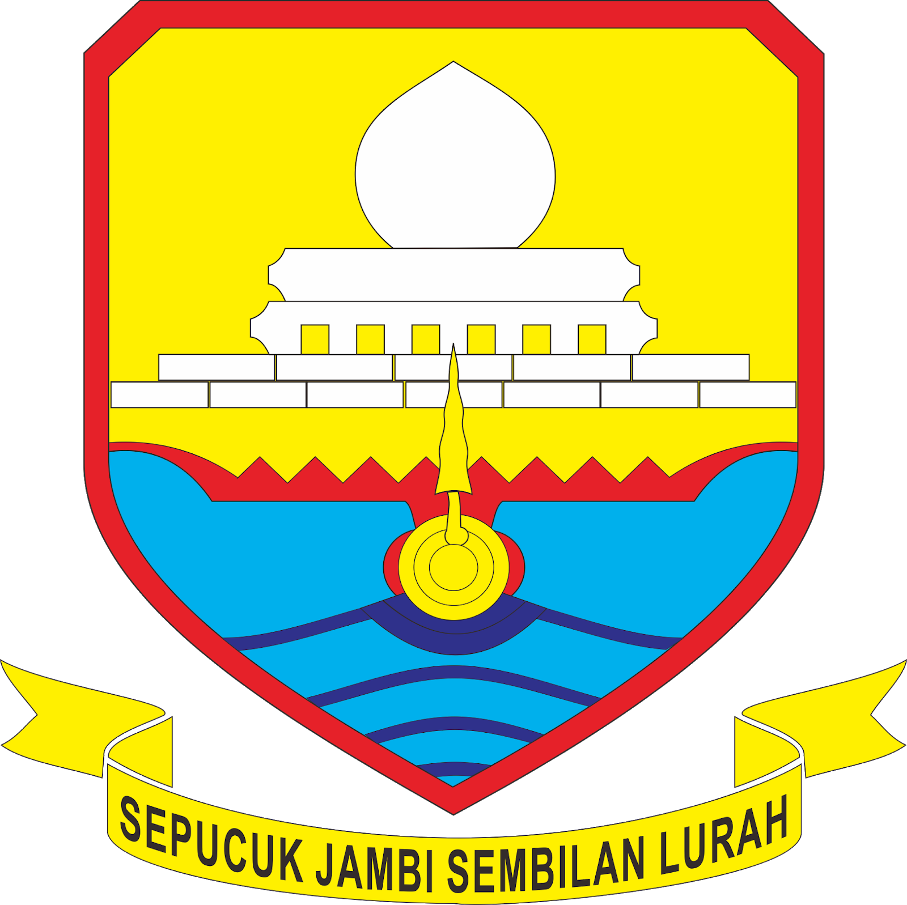

DATA STATISTIK KABUPATEN/KOTA
PROVINSI JAMBI TAHUN 2025

Kajang Leko
| No | Nama Kabupaten/kota | Ibu Kota | Luas Wilayah (km2) | Jumlah Penduduk (ribu jiwa) | Jumlah Kecamatan |
|---|---|---|---|---|---|
| 1 | Kabupaten Batanghari | Muara Bulian | 5.387,52 | 320,28 | 8 |
| 2 | Kabupaten Batanghari | Muara Bungo | 4.760,83 | 386,11 | 17 |
| 3 | Kabupaten Kerinci | Siulak | 3.445,20 | 258,21 | 16 |
| 4 | Kabupaten Merangin | Bangko | 7.540,12 | 378,36 | 24 |
| 5 | Kabupaten Muaro Jambi | Sengeti | 5.225,80 | 430,25 | 11 |
| 6 | Kabupaten Sarolangun | Sarolangun | 5.935,89 | 310,68 | 10 | 7 | Kabupaten Tanjung Jabung Barat | Kuala Tungkal | 5.546,06 | 339,63 | 13 | 8 | Kabupaten Tanjung Jabung Timur | Muara Sabak | 4.546,62 | 241,15 | 11 |
| 9 | Kabupaten Tebo | Muara Tebo | 6.103,74 | 359,64 | 12 |
| 10 | Kota Jambi | Jambi | 169,89 | 642,26 | 11 |
| 11 | Kota Sungai Penuh | Sungai Penuh | 364,92 | 101,92 | 8 |
Provinsi Jambi merupakan salah satu provinsi di Pulau Sumatera yang terdiri atas sembilan kabupaten dan dua kota. Kabupaten dengan wilayah terluas adalah Kabupaten Merangin dengan 24 kecamatan dan luas 7.540,12 km², sedangkan wilayah terkecil adalah Kota Jambi seluas 169,89 km². Namun, dari sisi jumlah penduduk, Kota Jambi memiliki penduduk tertinggi sebanyak 642,26 ribu jiwa dan wilayah dengan jumlah penduduk paling sedikit adalah Kota Sungai Penuh hanya sebesar 101,92 ribu jiwa.
Sumber data: Provinsi Jambi Dalam Angka 2025